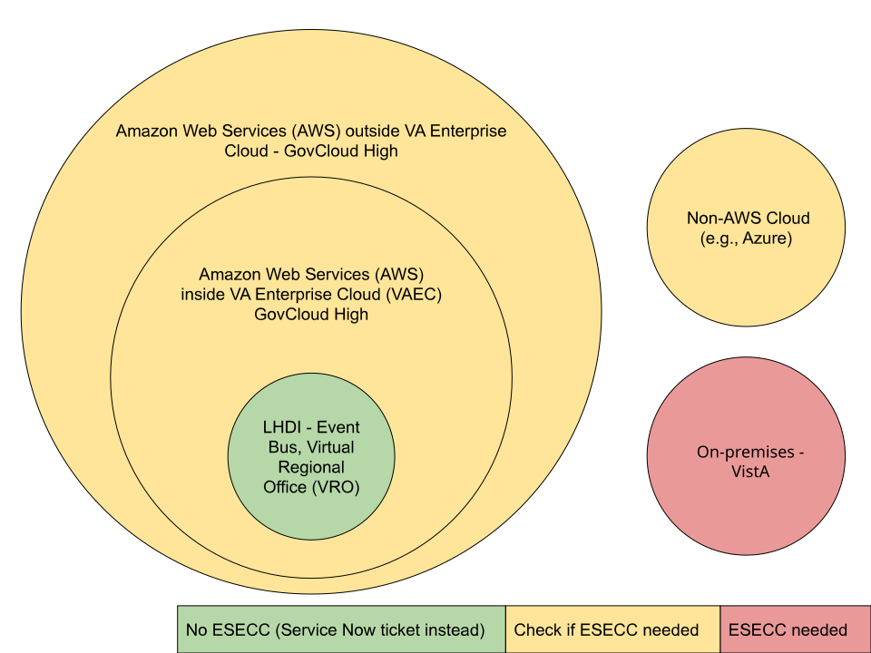

Producing Events
What's a producer?
A producer is an application designed to generate messages or events within an event-driven system. In the context of the Enterprise Event Bus, which aims to expose streams of events known as topics, producers play a crucial role. Producing teams have access to, or knowledge about, important data changes in the VA ecosystem and can send events to specific topics on the Event Bus. You can find a list of currently available topics in our Event Catalog.
As producers are responsible for defining topics and their contents, they will work with the Event Bus Team to determine configuration settings such as the number of topic partitions, event versioning, and event retention rules. The content below outlines the steps needed to start producing events. These steps can also be visualized on the Enterprise Event Bus Service Blueprint. To learn more about the components and processes involved in event-based systems, please visit our Introduction to Event-Driven Architecture page.
Steps to become a producer
Define the event or topic
The first step in producing an event is to contact the Enterprise Event Bus Team and express your interest in contributing an event stream. An ideal event stream represents a business event within the VA that would be of interest to multiple stakeholders and have a significant impact on Veterans. Examples of such events include changes to eligibility for benefits, milestones in the claims process, or updates to a Veteran's health record, such as new appointments, prescriptions, or lab results.
While it is not a requirement to have consumers identified from the start, in an ideal scenario the events would theoretically be meaningful to multiple, independent consumers. If you do have consumers in mind, reach out to them and engage in preliminary discussions about their needs, preferences, and timelines. You can find more information on consuming events on our Consuming Events page.
If there is a mutual interest to continue after the initial meeting, the Event Bus Team will create a one-page description of the proposed event topic, including details about the business context, event purpose, payload, and consumers. The partner team will review and provide feedback on the document and sign a Working Agreement and a Data Sharing Agreement.
Determine if you need an ESECC request
Depending on the location of a producer application, you may need to obtain an ESECC (Enterprise Security External Change Council) request. ESECC requests are required to open certain non-standard ports between different systems and allow traffic to flow over those ports.
The diagram below illustrates the relationship between producer locations and ESECC requirements. It shows that as a general rule, producers located within the VAEC (VA Enterprise Cloud) AWS Organization do not need to file an ESECC request. For producers who are in other AWS organizations, or outside of AWS, an ESECC process will likely be needed. If you’re unsure which category your use case fits in, please reach out to the Event Bus Team for help. However, please also note that while the Event Bus Team is happy to give direction and assist with some aspects of the ESECC process, producers are ultimately responsible for initiating and monitoring the request.
This example documentation provides a starting point that outlines the steps and processes involved in an ESECC request. Note that we have not verified that the document is complete and would be applicable in all situations. Please do your own research and be sure to get started as early as possible, as this can be a lengthy process.

Choose configuration settings and submit onboarding request
Before creating a topic, you need to consider various Kafka settings. Producing teams must choose appropriate settings based on their specific use case and technical requirements. From a logistical perspective, the Event Bus Team will handle the initial creation of the topic using the Kafka CLI and make it available for production.
Number of partitions
Partitions in Kafka serve as the primary unit of storage within a topic, with each partition containing a subset of events. Determining the number of partitions is crucial, as it has implications for storage, scalability, replication, and message movement. To learn more about reasonable defaults, and other partition-related concerns, read our guidance on topics and partitions.
Event retention
Event retention refers to how long an event exists within Kafka and remains available for consumption. This setting would be especially important to consumers who need to be prepared to handle missed events before they expire. For additional information and discussion, see our section about Retention in the Event Design ADR.
Event schema and event registry
The Event Bus utilizes the Confluent Schema Registry to store schemas and their versions. Avro is used to define the schema format. Producers must submit an event schema representing the event payload in Avro format as part of the onboarding process. Producers must also use Apache Avro to serialize data onto the Event Bus so that the event schema, and the data contract it represents, is enforced. Additionally, producers should consider event versioning, which involves planning how schemas will evolve. Event versions are governed by the compatibility type setting, which determines allowed schema changes and how consumers interact with different versions. For most producers, we recommend using the BACKWARD compatibility type. For more information, see our article about the Confluent Schema Registry, and about schema versioning.
Once the producing team has communicated their decisions about the event schema, the Event Bus team will create the topic, along with the schema, and notify the producing team when everything is ready for use.
Set up authorization and authentication
To produce messages to specific topics on the Event Bus, producers need to be authenticated and have the appropriate permissions. The Event Bus MSK cluster is only accessible from the VA Network, and we use AWS IAM (Identity and Access Management) Roles and Policies to control access to different resources. If your producing application is within the AWS environment, please inform us of the IAM Role(s) or IAM User(s) to which we should grant access. We will then set up the corresponding IAM Policies on our end and assign a named role for producers to authenticate with AWS MSK in their application code. If your producing application is outside of the AWS environment, we will request an IAM User to be created on your behalf. You will then be able to access the requested topic(s) using those credentials.
Connect to the Event Bus in the development environment
Once the authentication and authorization steps have been completed, you will be able to connect to the the Event Bus MSK cluster using the Kafka bootstrap server addresses and port numbers available in the Event Catalog. The following ports are open for consumers and producers that are authenticated with AWS IAM:
- 9098 (for access from AWS)
- 9198 (for access from outside of AWS)
Develop and deploy your producer application
Many programming languages and frameworks offer libraries designed to interact with Kafka. To ensure full compatibility with the Event Bus, your code needs to authenticate with the AWS MSK cluster using the assigned role provided during the onboarding process. Additionally, producers should reference the Confluent Schema Registry and use the created schema to serialize messages in Avro.
See for instance this Java code that produces messages to a topic named “test”:
Info
To see this Java producer code in context, please check out the kafka-client-sample in the ves-event-bus-sample-code repository.
Example
package gov.va.eventbus.example;
import io.confluent.kafka.serializers.KafkaAvroDeserializerConfig;
import io.confluent.kafka.serializers.KafkaAvroSerializer;
import io.confluent.kafka.serializers.KafkaAvroSerializerConfig;
import java.time.LocalDate;
import java.util.Properties;
import org.apache.avro.specific.SpecificRecord;
import org.apache.kafka.clients.CommonClientConfigs;
import org.apache.kafka.clients.producer.KafkaProducer;
import org.apache.kafka.clients.producer.ProducerConfig;
import org.apache.kafka.clients.producer.ProducerRecord;
import org.apache.kafka.common.config.SaslConfigs;
import org.apache.kafka.common.config.SslConfigs;
import org.slf4j.Logger;
import org.slf4j.LoggerFactory;
public class TestProducer implements Runnable {
private static final Logger LOG = LoggerFactory.getLogger(TestProducer.class);
// Producer values
private static final String TOPIC = "test";
private static final String EB_BOOTSTRAP_SERVERS = System.getenv("EB_BOOTSTRAP_SERVERS");
private static final String EB_SECURITY_PROTOCOL = System.getenv("EB_SECURITY_PROTOCOL");
private static final String SCHEMA_REGISTRY_URL = System.getenv("SCHEMA_REGISTRY_URL");
private static final String AWS_ROLE = System.getenv("AWS_ROLE");
private final KafkaProducer<Long, SpecificRecord> producer;
public TestProducer() {
this.producer = createProducer();
}
@Override
public void run() {
try {
var sequenceNumber = 0;
while (true) {
sequenceNumber++;
// The messages in the topic adhere to a User schema
var user = User.newBuilder()
.setName("Newbie")
.setCompany("Ad Hoc")
.setDateOfBirth(LocalDate.of(2000,7,26))
.setSequenceNumber(sequenceNumber)
.build();
// Create producer record
ProducerRecord<Long, SpecificRecord> producerRecord = new ProducerRecord<>(TOPIC, user);
// Send the record to the Kafka topic
producer.send(producerRecord);
Thread.sleep(1000);
}
} catch (final Exception e) {
LOG.error("An exception occurred while producing messages", e);
} finally {
producer.close();
}
}
private KafkaProducer<Long, SpecificRecord> createProducer() {
final Properties props = new Properties();
props.put(ProducerConfig.BOOTSTRAP_SERVERS_CONFIG, EB_BOOTSTRAP_SERVERS);
props.put(ProducerConfig.KEY_SERIALIZER_CLASS_CONFIG, KafkaAvroSerializer.class.getName());
props.put(ProducerConfig.VALUE_SERIALIZER_CLASS_CONFIG, KafkaAvroSerializer.class.getName());
props.put(KafkaAvroSerializerConfig.SCHEMA_REGISTRY_URL_CONFIG, SCHEMA_REGISTRY_URL);
props.put(KafkaAvroSerializerConfig.AUTO_REGISTER_SCHEMAS, false);
props.put(ProducerConfig.ENABLE_IDEMPOTENCE_CONFIG, false);
// Use SASL_SSL in production but PLAINTEXT in local environment
// w/docker_compose
if ("SASL_SSL".equals(EB_SECURITY_PROTOCOL)) {
props.put(CommonClientConfigs.SECURITY_PROTOCOL_CONFIG, EB_SECURITY_PROTOCOL);
props.put(SslConfigs.SSL_TRUSTSTORE_LOCATION_CONFIG, "/tmp/kafka.client.truststore.jks");
props.put(SaslConfigs.SASL_MECHANISM, "OAUTHBEARER");
props.put(SaslConfigs.SASL_JAAS_CONFIG,
"org.apache.kafka.common.security.oauthbearer.OAuthBearerLoginModule required awsRoleArn=\""
+ AWS_ROLE // use the role name provided to you
+ "\" awsStsRegion=\"us-gov-west-1\";");
props.put(SaslConfigs.SASL_LOGIN_CALLBACK_HANDLER_CLASS,
"software.amazon.msk.auth.iam.IAMOAuthBearerLoginCallbackHandler");
} else if (!"PLAINTEXT".equals(EB_SECURITY_PROTOCOL)) {
LOG.error("Unknown EB_SECURITY_PROTOCOL '{}'", EB_SECURITY_PROTOCOL);
}
return new KafkaProducer<>(props);
}
}
Register with CODE VA
CODE VA (formerly known as the Hub) is a software catalog that houses entities from across VA. Once you have your producer application up and running, it's important to register with the catalog to ensure that both current and future consumers can discover your event and access its details.
In Backstage, entities represent software components or resources that share a common data shape and semantics. While there are several built-in entities, we have specifically created a custom entity called "Event" for the Event Bus.
To register your topic with CODE VA:
- Create a file named
catalog-info.yamlat the root of your source code repository. -
Populate the
catalog-info.yamlfile with anEventBackstage entity based on the data structure below:apiVersion: backstage.io/v1alpha1 kind: Event metadata: name: event-name description: Event description title: Event Name links: - url: https://sample-slack-link.com title: Event Producer slack channel - url: https://sample-link.com title: Event documentation spec: type: event lifecycle: production domain: health productowner: platform-PO-that-owns-this-work-for-VA team: team-that-maintains-event-producing-code system: system-that-produces-the-event topics: - topic: dev_appointments environment: development brokerAddress: broker_address_from_event_bus - topic: staging_appointments environment: staging brokerAddress: broker_address_from_event_bus - topic: prod_appointments environment: production brokerAddress: broker_address_from_event_bus forwarders: - systemName: First Forwarder teamName: first-forwarder-team - systemName: Second Forwarder teamName: second-forwarder-teamHere is some additional information on the individual fields:
apiVersion [required]: For the time being,
apiVersionwill have a constant, static value ofbackstage.io/v1alpha1, though we are most likely free to change this if we wish. Because we are introducing a new Entity Kind that doesn't exist in Backstage, anyEventspecification we validate against won't correspond to anything. Read more here.kind [required]: This value must be set to
Eventin order to pass JSON schema validation.metadata [required]: A structure that contains information about the entity itself. The metadata structure includes the following properties:
-
name [required]: A machine-readable name of the event
-
description [required]: A short description of the event
-
title [required]: A human-readable representation of the
nameto be used in Backstage user interfaces -
links [optional]: An optional list of links related to the event that will be displayed on the details page. Each link consists of a
urlandtitle
spec [required]: The section of a
catalog-info.yamlfile that producers will most likely be filling out. Contains information about the events a producer will be emitting.-
type [required]: Currently set to event
-
lifecycle [required]: Displayed in table. The current development status for an event. Possible values are:
experimental,development,production, ordeprecated. -
domain [required]: Displayed in table. The domain in which a particular event exists. Values might be:
claims status,health,appointments,benefits, etc. -
productowner [required]: Displayed in details page. OCTODE/VA PO embedded on team (directly below) building app code.
-
team [required]: The application team that maintains app code responsible for producing events
-
system [required]: The system from which events are produced
-
topics [required]: The Kafka topics these events will be published to. Each topic consists of the actual topic name, the environment it's available in, and the broker address that will be provided to you by the Event Bus Team. The example shows a topic for each the dev, staging, and production environments.
-
forwarders [optional]: Displayed in details page. Array of objects with
systemNameandteamNameproperties. Used if there is a system sitting in between the source data store and the Event Bus that mutates data before an event is published.
The
catalog.yamlfile will be validated against this JSON schema. The requiredspec.schemaandspec.schemaCompatibilityModefields included in this JSON schema will be auto-populated and do not need to be included in thecatalog-info.yamlfile. These values will be fetched from the Schema Registry based on the event's topic name. -
-
Once your
catalog-info.yamlfile has been committed, log into CODE VA while on the VA network, and follow the default Backstage provided method for adding entries to the catalog.
Logs
Logs are stored within a LightHouse Delivery Infrastructure (LHDI) AWS S3 bucket. Only LHDI admins with AWS access can access this bucket and its content. Although producers and consumers will not have access to the S3 bucket directly, logs are available via Datadog.
Datadog is a monitoring and analytics tool that is used within the VA. LHDI team members are admins within the Datadog space where the Event Bus metrics and logs are available. To request access to Datadog, complete the HelpDesk form on the ServiceNow Portal at ECC (Enterprise Command Center) Monitoring Services - your IT Service Portal. This must be accessed from the VA Network.
Troubleshooting
If you have questions or run into difficulties with any of these steps, please contact the Enterprise Event Bus Team.